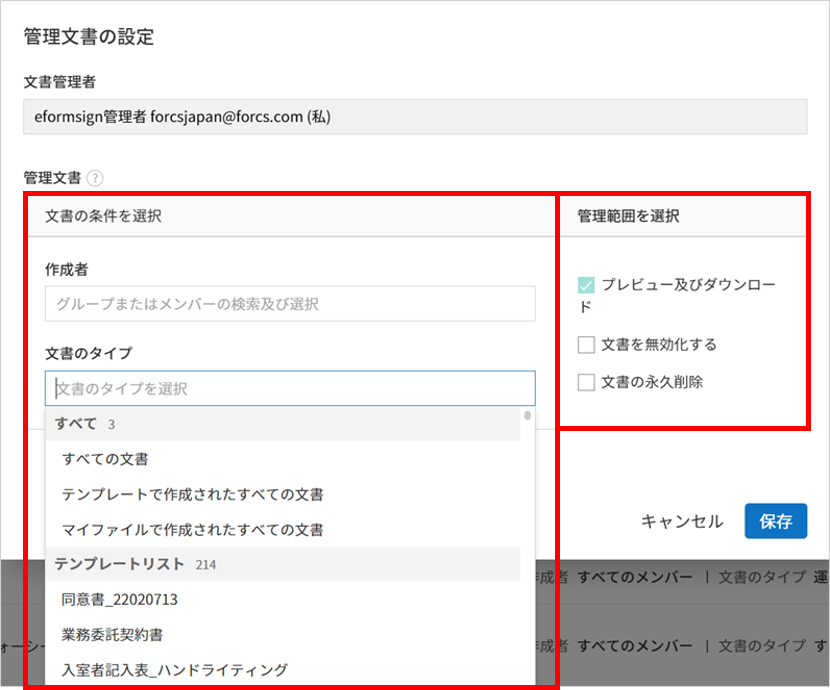
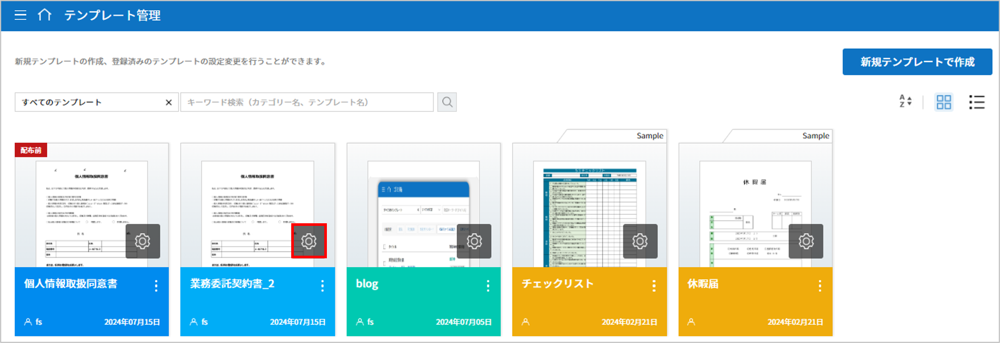
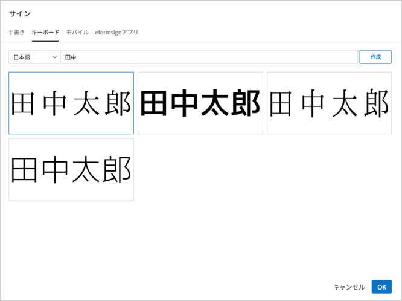
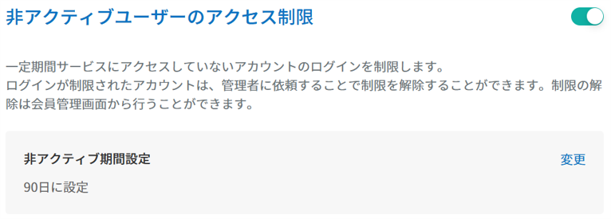

基本情報
ダッシュボード
メニューの構成
eformsignにログインした後、ダッシュボード画面の左上のメニュー ( ) をクリックすると、次のようなサイドバーメニューが表示されます。
) をクリックすると、次のようなサイドバーメニューが表示されます。
注釈
メニューは、ユーザーの権限によって内容が変化します。代表管理者には全てのメニューが表示され、全ての権限を持ちます。 権限設定に関する詳細は 権限の区分をご参照ください。

各メニューの説明は次の通りです。
文書の新規作成： PCに保存されている文書ファイルまたはeformsignにアップロードされている作成可能なテンプレートを選択し、文書を作成します。
マイファイルで作成する： 事前に保存されているテンプレートが無くても、PCに保存されている文書ファイルをeformsignにアップロード後、入力項目を文書上に設定し、受信者に送信します。
テンプレートで作成する： 文書の作成ができるテンプレートのリストが表示され、そこからテンプレートを選択して文書を作成します。
マイファイルトレイ： マイファイルで作成する から 文書作成をスタート をクリックする前に**マイファイルトレイに保存**したファイルリストを確認することができます。
文書トレイ： 各文書のステータスをリスト形式で表示します。
要処理文書: 本人が処理する必要がある文書（他のメンバーが作成・署名依頼をした文書）、 テンプレートで作成する から下書き保存した文書、またはメンバーではない受信者に送信した文書のうち、処理期限が過ぎて再要請が必要な文書を一覧で確認することができます。
進行中の文書: 本人が作成、または処理した文書のうち、まだ完了していない文書を一覧で確認することができます。
完了文書: 本人が作成した文書のうち、完了した全ての文書を一覧で確認することができます。
一括作成文書: 本人が一括作成して送信した文書のステータスを確認することができます。
共有文書トレイ: 所有している文書を他のメンバーに共有することができます。共有文書ボックスへのアクセス権限がある場合、共有された文書を一目で確認できます。
ゴミ箱: 文書トレイから手動で削除した文書と保管期間が過ぎ自動的に削除された文書をリスト形式で確認することができます。
文書管理： このメニューには、文書管理権限がある場合にのみアクセスできます。文書の管理権限を持つテンプレートで作成された全ての文書を確認することができます。ただし、代表管理者の場合は全ての文書を確認・管理することができます。
一括作成文書管理； 文書管理者権限があるユーザーのみアクセスできるメニューです。文書管理権限があるテンプレートで一括作成された文書を照会することができます。ただし、代表管理者の場合、すべての文書を照会及び管理することができます。
マイ署名： 自分の署名を登録することで、文書の作成時に使用することができます。
アドレス帳 よくやり取りをする外部受信者の情報をアドレス帳に登録し、管理することができます。
マイ連絡先： 外部受信者のアドレス帳を登録・管理することができます。
業務連絡先： 会社または代表管理者が登録した外部受信者の連絡先を確認できます。
テンプレート管理： このメニューには、テンプレート管理の権限がある場合にのみアクセスできます。テンプレートのリストを確認し、テンプレートの作成と設定ができます。
会社管理： このメニューには、会社の代表管理者か会社管理権限を持つメンバーのみアクセスできます。会社情報の確認・変更ができます。
会社情報： 会社情報を確認・修正し、ダッシュボードやメールなどに適用されるブランドのロゴ、シンボルを設定することができます。
グループ管理： メンバーのグループを作成し、グループ情報を修正することができます。
メンバー管理： メンバーを招待し、メンバー情報を修正することができます。
業務連絡先管理： 会社全体のメンバーと共有する外部受信者のアドレス帳を登録・管理できます。
権限管理： メンバーごとに会社管理者、テンプレート管理者、文書管理者権限を付与・管理できます。
付加機能の設定： 会社全体および全てのメンバーに適用される付加機能の利用可否を設定することができます。
有料オプションの設定： 本人確認やタイムスタンプなど追加費用が発生するオプションの利用可否を設定できます。
署名方式の設定： 署名時に、署名の入力方式を制限または許可することができます。（テキスト署名およびスタンプ作成による署名入力方式）
コメントおよびメモ： 文書作成時に、ペンまたは蛍光ペンで表示できるコメント機能およびメモ機能の利用可否を設定できます。
会社印管理： 法人印鑑、会社印などを会社の印鑑として登録します。各印鑑ごとに使用権限の設定、印鑑使用内訳の確認ができます。
通知テンプレート管理： eformsignから送信されるメールとSMSの通知テンプレートのリストを確認・修正することができ、新規の通知テンプレートを追加することができます。
カスタムフィールド管理： 会社、グループ、メンバーに関する情報を追加・変更することができます。
セキュリティ設定: ログインの2段階認証や重複ログインの防止などログイン関連のセキュリティ設定、IP接続制御設定などのアカウント保護のためのセキュリティ機能を設定することができます。
文書の保管期間の設定: 社内で作成される全ての文書に対する保管期間を設定することができます。
操作履歴管理: eformsignへのアクセス履歴、情報修正履歴、ダウンロード履歴などユーザーの操作に関する履歴を確認することができます。
コネクト： このメニューには、代表管理者のみアクセスできます。外部のサービスと連携して使用する機能を確認することができます。
クラウドストレージ： Dropbox、Googleドライブ、Box、OneDriveのアカウントと連携して、完了文書が自動保存されるように設定することができます。
分析およびレポート： 文書に入力されたデータがGoogle SheetsとOffice365 Excelに、文書への入力データが自動保存されるように設定することができます。
API / Webhook: eformsignのAPIを使用する際に必要なAPI及びWebhookキーを管理することができます。
料金管理： 料金プラン・リアルタイム利用状況・決済履歴の確認と料金プラン・決済方法を変更することができます。
料金プラン ：使用中の料金プランを確認・変更することができます。
リアルタイムの使用履歴 ：現在までの利用履歴と残り件数をリアルタイムで確認することができます。
決済履歴 ：直近1年間の決済履歴を確認することができます。
決済手段の設定 ：決済時に使用するクレジットカード情報を登録することができます。
利用状況： 週間、月間、年間、メンバーごとの利用状況を確認することができます。
eformsign for Microsoft Officeをダウンロード： Microsoft Officeで電子書式 (テンプレート) を作成するためのOfficeアドイン(eformsign for Microsoft Office)をダウンロードします。
ダッシュボード画面の構成
eformsignにログインすると、アクセス権限に関係なく同じダッシュボード画面が表示されます。ダッシュボードからフィアルをアップロードして文書を作成でき、登録されたテンプレートを確認しずぐ文書作成ができます。また、要処理文書や進行中の文書などを確認することができ、文書トレイなどのメインメニューにすぐアクセスできます。

① 各文書トレイにアクセス
要処理文書トレイ: 処理する必要がある文書の件数が表示されます。クリックすると 要処理文書に移動します。
進行中の文書トレイ: 現在進行中の文書の件数が表示され、クリックすると、進行中の文書のリストが確認できる 進行中の文書に移動します。
完了文書トレイ: クリックすると、 完了文書に移動します。
マイファイルトレイ: マイファイルで作成するメニューから文書を作成中に 文書作成をスタート をクリックする前に**マイファイルトレイに保存**されたファイル数が表示され、クリックすると、 マイファイルトレイに移動します。
② マイファイルで作成する
該当領域にファイルをドラッグ&ドロップすると、すぐに新規文書を作成できる マイファイルで文書作成 画面に移動します。 マイコンピュータからファイルを選択をクリックすると、 マイファイルで文書を作成するファイルがアップロードできる画面に移動します。
③ テンプレートで作成する
お気に入りのテンプレート、最近使用したテンプレート、最近アップロードしたテンプレートの順に表示されます。当該テンプレートの文書作成アイコンをクリックすると、すぐに文書を作成することができます。テンプレート全体の表示をクリックすると、テンプレートで文書作成の画面に移動し、全てのテンプレートを確認することができます。
: 1件の文書を作成します。
: 複数の文書を一度に作成し、送信することができる 一括作成 ページに移動します。
基本情報の確認及び変更
eformsignに会員登録する際に入力した個人情報と登録した会社の情報は、サイドバーメニューの右上のアイコン( )をクリックすることで確認できます。
)をクリックすることで確認できます。
会社の変更： 本人が所属している会社が複数登録されている場合、会社の変更をクリックすることで会社の一覧が表示されます。変更する会社をクリックすることで所属会社を変更できます。
マイ情報： eformsignに会員登録した際に入力した個人情報の確認・修正、所属会社の情報を確認できます。
ログアウト： eformsignからログアウトします。
マイ情報
マイ情報 > 個人情報
eformsignに登録されている個人アカウント情報を確認できます。

- 個人情報
会員登録時に入力した氏名、メールアドレスまたはID、パスワード、電話番号の詳細を確認・修正することができます。
- セキュリティ
当該アカウントでログインする際に、登録されたメール宛てに通知を送るよう設定することができます。
- SNSアカウントで接続
GoogleやFacebookのアカウントを使用して接続、アカウントの追加、接続解除ができます。
- お知らせ
マーケティング情報の受信に対する同意の確認と受信の同意/解除ができます。
- eformsignを脱退する
eformsignから退会したい場合は、画面の下部の eformsignを脱退するをクリックすることで退会できます。
注釈
名前やメールアドレスなどの個人情報は、マスキングされた状態で表示されます。 情報を確認・修正するには、画面上部の マスキング解除および修正 ボタンをクリックし、再度パスワードを入力する必要があります。 ※ 「マイ情報」メニュー内での移動（個人 ↔ 会社）の場合は、再認証は不要です。
マイ情報 > 会社情報
自分が所属している会社の情報を確認できます。

- 基本情報
本人が所属している会社の会社名、国、言語、電話番号などの基本情報を確認できます。
- 詳細情報
本人が所属している会社の住所、事業所登録番号、ホームページのURL、代表管理者の氏名、メールアドレスを確認することができます。
注釈
マイ情報では、会社情報の確認のみできます。会社関連情報の修正は、会社管理 > 会社情報 メニューから可能です。会社情報の修正は、代表管理者 または 会社管理の権限を持っているメンバーのみ可能です。
- この会社を脱退する
所属している会社から退会したい場合は、画面下部の この会社を脱退するをクリックします。 この会社を脱退するをクリックすることで所属している会社のリストが表示され、そのリストから退会したい会社を選択して退会を行うことができます。
重要
一般メンバーが所属会社から退会する場合、個人のアカウントは削除されないため、別の会社への所属や、新たな会社への登録が可能です。
代表管理者の場合は、退会時に会社が削除されます。会社を削除せず会社から退会したい場合は、代理管理者を別のユーザーに変更した後、会社を退会する必要があります。
代表管理者の変更は 会社管理 > 会社情報 > 基本情報から行うことができます。
会社情報の修正
マイ情報で確認可能な会社情報については、 会社管理 > 会社情報から修正することができます。
注釈
この作業は 代表管理者 または 会社管理の権限が必要です。
登録されている会社の情報の修正方法
サイドバーのメニューから 会社管理 > 会社情報に移動します。

会社情報 > 基本情報 画面で修正したい情報の 修正をクリックします。
修正が完了したら、 保存 ボタンをクリックします。

ブランド
会社のロゴやシンボルを登録して、eformsignのダッシュボードとサイドバーのメニューに表示できます。文書の検討を依頼する際に送信するメールのテンプレートにも表示できます。
注釈
ロゴとシンボルの違い
ロゴもシンボルも、会社を代表するイメージとなります。ロゴは横長の画像にブランド名が書かれている形式、シンボルは正方形の画像のみの形式です。
推奨サイズ
ロ ゴ: 512 x 128の横長、背景透過画像
シンボル: 120 x 120の正方形、背景透過画像
会社のロゴの登録方法
サイドバーのメニューから 会社管理 > 会社情報に移動します。
ブランド タブをクリックします。
ブランドイメージ > ロゴ のロゴ画像をクリックします。
画像アップロードのポップアップが表示されたら、PCに保存されているロゴの画像ファイルを選択してアップロードします。
画像サイズ：幅512px、縦128pxを推奨
ファイルサイズ：最大300KBまで
ファイル形式：PNG、JPG、JPEG、GIF
画面右上の保存ボタンをクリックします。
ダッシュボードで変更されたロゴを確認します。
メンバー及びグループの管理
会社管理 メニューでは、メンバーの招待/削除/修正、グループの作成/追加/削除ができます。

メンバー管理
メンバー管理メニューでは、メンバーの会社への招待、招待したメンバーの管理ができます。

- ① 活性メンバー
招待を承諾し、活性化したメンバーの一覧と情報を確認することができます。
- ② 非活性メンバー
非活性メンバーの一覧と情報を確認することができます。
- ③ 招待メンバー
招待したメンバーの一覧と情報を確認することができます。
- ④ メンバーリスト
リスト内のメンバーをクリックすることで、右側の メンバー情報タブから情報を確認、修正、削除することができます。
- ⑤ メンバー情報の修正
メンバー情報の確認と修正や、メンバーの状態の変更、会社管理とテンプレート管理の権限の付与ができます。
- ⑥ フィールド値設定
メンバーに関するフィールド値を設定することができます。
- ⑦ 共有文書トレイの移管
メンバーが所有する共有文書トレイを保管のメンバーに移管することができます。所有する共有文書トレイが複数ある場合、まとめて移管/個別に移管することもできます。
- ⑧ 文書の移管
メンバーがeformsignを使用しなくなる場合や、部署の変更などによる文書の移管が必要な場合に使用します。当該メンバーが処理済み/処理待ちの文書を他のメンバー移管することができます。
- ⑨ メンバーを一括招待
メンバー招待の際、複数のメンバーを一括招待できます。
- ⑩ メンバー招待
メールまたはIDでメンバーを招待することができます。
重要
メンバー招待の際、メールまたはSMSで送信されたメンバー招待リンクは7日間有効です。 メンバー招待後、招待されたメンバーが7日以内に招待を受け入れなかった場合は無効なメンバーになります。招待が必要な場合、再度同じ手順で招待してください。
- ⑪ メンバーリストをダウンロード
会社に所属するメンバーのリストをCSVファイルでダウンロードすることができます。
- ⑫ メンバーの削除
ごみ箱 アイコンをクリックすると、メンバーリストの左側のチェックボックスが活性化します。削除するメンバーを選択し、削除 ボタンをクリックすると、メンバーが削除されます。
グループ管理
グループ管理メニューでは、グループの作成、グループ情報の確認/変更/削除ができます。

- ① グループ情報
グループリストから情報を確認したいグループをクリックすると、右側のグループ情報タブからグループ名とグループの詳細を確認・修正することができます。
- ② メンバーリスト
グループに所属しているメンバーのリストを表示し、メンバーを追加または削除することができます。
- ③ フィールド値の設定
グループに関するフィールド値を設定できます。
- ④ グループの追加
グループの追加をクリックすると、グループの追加 ポップアップウィンドウが表示されます。グループ名とグループの詳細を入力し、メンバーを検索・追加することでグループを作成することができます。
- ⑤ グループの削除
ごみ箱 アイコンをクリックすると、グループリストの左側にあるチェックボックスが活性化します。削除したいグループを選択し、 削除ボタンをクリックするとグループが削除されます。
権限の区分
eformsignでは各メンバーに権限を付与することができます。テンプレートごとの権限を含む、全5種類の権限を管理することができます。各ユーザーの権限は、次のように区分されます。
代表管理者
会社の代表者として、eformsignの使用に関わる全ての権限を持ちます。
会社管理者
会社管理 メニューにアクセスできます。会社情報、メンバー、グループなどを管理ができ、 メンバーの招待 と 文書の移管 ができます。
テンプレート管理者
テンプレート管理 メニューにアクセスできます。テンプレート管理メニューからファイルをアップロードするか、Office製品からテンプレートを新規作成して新規テンプレートとして登録することができます。また、テンプレートの修正、配布、削除を行うことができます。
文書管理者
文書管理 メニューにアクセスできます。テンプレートごとの作成された文書の閲覧、ダウンロードができます。文書管理権限を持つ文書の閲覧・ダウンロードができるほか、権限範囲によっては文書の無効化、削除ができます。
テンプレートの作成権限
テンプレート管理 メニューにアクセスできます。 テンプレート管理 メニューからファイルをアップロードし、MS Officeからテンプレートを作成して登録できます。
注釈
管理者権限およびテンプレートの作成権限は、 会社管理>権限管理 メニューから設定できます。 代表管理者は全ての権限を設定でき、 会社管理者は会社管理者を除いた権限を設定できます。
テンプレートごとの権限
テンプレートごとにメンバーまたはグループに対し、次のような権限を付与できます。
テンプレートの使用権限
テンプレートを使用して文書を作成できる権限です。権限を持っているメンバーの テンプレートで文書を作成する 画面にそのテンプレートが表示され、文書を作成できます。
テンプレートの修正権限
テンプレートを修正できる権限です。❗テンプレート修正権限は、テンプレート管理者であるメンバーのみ付与できます。
代表管理者
会員登録時に会社を新規登録したユーザーが自動的に代表管理者となります。eformsignの使用に関する全ての権限を持つ最高管理者です。
代表管理者は、
全てのメニューにアクセスできます。
テンプレートの作成、変更、削除、管理ができます。
全ての文書を作成、表示、無効化などの管理ができます。
各メンバーに権限を付与することができます。
代表管理者の変更が必要な場合は、他のメンバーに権限を委任できます。
❗代表管理者が退会した場合、会社は削除されます。会社を削除せずに退会するには、代表管理者を他のメンバーに変更してから退会する必要があります。
代表管理者の変更方法


会社管理者
会社管理者は 会社管理 メニューにアクセスできる権限を持ち、会社やメンバー、グループに関する情報を確認、修正、削除することができます。
会社管理者権限は メンバー管理 または 権限管理 メニューから設定できます。
会社管理者の設定方法(会社管理 > メンバー管理)
サイドバーのメニューから 会社管理 > メンバー管理に移動します。
メンバーリストから 会社管理 権限を付与したいメンバーを選択します。
メンバーリスト右側の もっと見る ボタンをクリックした後、 メンバー情報の修正 をクリックします。
メンバー情報の修正 ポップアップで下側の 権限で**会社管理**を選択します。

保存 ボタンをクリックします。
会社管理者の設定方法(会社管理 > 権限管理)
サイドバーのメニューから 会社管理 > 権限管理に移動します。
会社管理者 権限設定画面の右上の 会社管理者追加 ボタンをクリックします。

会社管理者に設定するメンバーを検索・選択します。
確認 ボタンを押すと、選択したメンバーが会社管理者に追加されます。
注釈
会社管理者権限を削除するには、右上のゴミ箱アイコンをクリックし、権限を削除するメンバーを選択後 削除 ボタンをクリックします。
テンプレート管理者
テンプレート管理者は テンプレート管理 メニューへのアクセス権限を持っており、テンプレートの登録、修正、配布、削除ができます。
注釈
テンプレートを登録したテンプレート管理者が、登録したテンプレートの所有者になります。1つの会社にテンプレート管理者が複数人存在する場合、テンプレート所有者とテンプレート管理者は異なる場合があります。
テンプレート管理者がテンプレート所有者でない場合、テンプレート設定を表示して設定内容の確認、テンプレートの複製のみ可能です。
テンプレート管理者権限は メンバー管理 メニューまたは 権限管理 メニューから設定できます。
テンプレート管理者の設定方法(会社管理 > メンバー管理)
サイドバーのメニューから 会社管理 > メンバー管理に移動します。
メンバーリストから、テンプレート管理の権限を付与するメンバーを選択します。
メンバーリスト右側の もっと見る ボタンをクリックした後、メンバー情報の修正をクリックします。
メンバー情報の修正ポップアップで下側の 権限で テンプレート管理を選択します。

保存 ボタンをクリックします。
テンプレート管理者の設定方法(会社管理 > 権限管理)

{kind=link}
{kind=link}
{kind=link}
{kind=link}
{kind=link}
{kind=link}
{kind=link}
{kind=link}
{kind=link}
{kind=link}
文書管理者
文書管理者は、 文書管理 メニューにアクセスすることができます。文書管理者権限を持つテンプレートで作成された文書を閲覧・ダウンロードすることができるほか、管理範囲によっては文書を無効化・削除することができます。
文書管理者権限の設定方法
サイドバーメニューから 会社管理 > 権限管理に移動します。
権限メニューから 文書管理者をクリックします。
右上の 文書管理者を追加 ボタンをクリックします。

文書管理者に設定するメンバーを検索・選択します。

確認 ボタンをクリックすると、選択したメンバーが文書管理者に追加されます。

リストから追加したメンバーの右側の 設定 ボタンをクリックし、管理文書に関する詳細な設定を行います。
 注釈
管理文書の設定方法
文書管理者に管理権限を付与する文書の条件を設定します。
文書の条件を選択: 文書作成者と文書のタイプを選択すると、選択した作成者が作成した文書に対する管理権限が付与されます。 例） '人事部'で作成した'雇用契約書'に対する文書管理者を設定する場合、作成者に'人事部'、文書のタイプにテンプレートリストの'雇用契約書'を選択します。
- 文書のタイプ
すべての文書: 選択した作成者が作成した全ての文書を管理します。
テンプレートで作成されたすべての文書: 選択した作成者が作成した文書のうち、テンプレートから作成した全ての文書を管理します。
マイファイルで作成されたすべての文書: 選択した作成者が マイファイルで作成する メニューから作成した全ての文書を管理します。
テンプレートリスト: 選択した作成者が当該テンプレートで作成した文書を管理します。

詳細条件の設定: 文書の種類を選択後、文書に入力された内容をもとにキーワード/範囲/期間を設定します。フィールド名に入力項目IDを入力し、キーワード（完全一致/部分一致）、範囲または期間を設定します。条件に該当する文書が、文書管理者の文書管理メニューに表示されます。

📣 詳細条件は複数設定することができ、 OR条件 が適用されます。また、 一括作成文書管理 には適用されません。
管理範囲を選択: 文書の条件で設定した文書に関する管理範囲を設定します。
プレビュー及びダウンロード: 文書管理者の基本権限です。文書管理者に選択された時点で自動的に付与され、変更することはできません。文書管理権限を持つグループ・メンバーの全ての文書を閲覧することができます。
文書を無効化する: 進行中の文書に対して無効化することができる権限です。
文書の永久削除: システム上から文書を永久的に削除することができる権限です。
{kind=link}
{kind=link}
{kind=link}
テンプレートの作成権限
テンプレートの作成権限を持つメンバーは テンプレート管理 メニューにアクセスでき、テンプレートを作成できます。
注釈
テンプレートを作成したメンバーが当該テンプレートの所有者になります。 テンプレートの使用権限を本人以外のメンバーに付与する場合、テンプレート管理者にテンプレートの配布要請をする必要があります。 テンプレートの所有者ではない場合、当該テンプレートの設定確認とテンプレート複製のみできます。
テンプレートの作成権限は 会社管理 > 権限管理 メニューから設定できます。
テンプレートの作成権限を設定する方法
{kind=link}
{kind=link}
各テンプレートの権限
各テンプレートを使って文書の作成ができる テンプレートの使用権限と、各テンプレートを修正できる 修正権限があります。
テンプレートの使用権限：この権限が付与されたメンバーは 文書の新規作成 > テンプレートで文書作成する メニュー画面から、権限を持つテンプレートを使用して文書を作成できます。
テンプレートの修正権限：この権限が付与されたメンバーは テンプレート管理から、権限を持つテンプレートを修正することができます。
注意
テンプレートの修正権限は テンプレート管理者 にのみ付与することができます。
権限の付与方法
注釈
この作業には 代表管理者 または テンプレート管理 の権限が必要です。
サイドバーのメニューから テンプレート管理に移動します。
テンプレートの設定 ボタンをクリックします。
 権限の設定 タブを選択します。

それぞれの権限を付与するグループまたはメンバーを選択します。
保存 ボタンをクリックします。
{kind=link}
アドレス帳
アドレス帳 メニュー外部受信者の連絡先を直接登録・管理でき、また管理者が登録した会社の連絡先を確認できます。 登録されたアドレス帳は文書送信時に一覧から簡単に選択できます。
マイ連絡先: マイ連絡先のメニューから直接登録したもの、または文書送信ポップアップで登録した外部受信者の連絡先です。
業務連絡先: 代表管理者または会社管理者が登録し、すべてのメンバーに共有されたアドレス帳です。
マイ連絡先
よく使用する外部受信者の連絡先を、直接登録・管理できます。

① アドレス帳の検索・並び替え
キーワード検索：アドレス帳一覧で名前やメールアドレスなどのキーワードを入力して検索できます
並び替え: 右側の並び替えアイコンをクリックすると、名前やメールアドレスなどを基準に、連絡先一覧を昇順/降順で並び替えできます。
② アドレス帳選択および登録
すべて選択: 画面に表示されている連絡先一覧をすべて選択できます。
削除: 選択した連絡先を削除します。
ダウンロード: 選択したアドレス帳の情報をExcelファイルとしてダウンロードします。
アドレス帳の登録: 新しい連絡先を登録します。
アドレス帳の一括登録: 連絡先をまとめて登録できます。1回につき最大1,000件まで登録可能です。
- ③ アドレス帳一覧
登録された連絡先の一覧が表示されます。 各連絡先の右側にあるもっと見る(⋮) メニューをクリックし 修正 または 削除できます。
Tip
文書送信時、送信ポップアップで連絡先に登録されていない新しい外部受信者の情報を入力すると、その連絡先はマイ連絡先に自動登録されます。
連絡先を一括登録する方法
連絡先は、Excelファイルを使用して最大1,000件まで一度に登録できます。
連絡先の一括登録 ボタンをクリックします。
[Excelフォームのダウンロード] ボタンをクリックしファイルをダウンロードします。

ダウンロードしたExcelファイルを開き、テンプレートに沿って連絡先情報を入力し、保存します。
[ファイルのアップロード] ボタンをクリックし、作成したファイルをアップロードします。
登録 ボタンをクリックすると、連絡先が一括で登録されます。
注釈
連絡先の一括登録Excelファイルファイル作成時の注意事項
名前と連絡先（メールアドレスまたは携帯番号）の両方を入力する必要があります。
Excelに入力した連絡先が、既に登録されている連絡先と以下の条件で一致する場合、既存の連絡先情報は最新の情報に更新されます。
名前とメールアドレスが同一の場合
名前と携帯電話番号が同一の場合
名前・メールアドレス・携帯電話番号がすべて同一の場合
重複した連絡先は新規登録されず、既存の情報が更新されます。
業務連絡先
管理者が登録し、会社全体に共有されている外部受信者の連絡先を確認し、Excelファイルとしてダウンロードできます。
注釈
業務連絡先の登録および修正は 会社管理 > 業務連絡先 メニューから 代表管理者 または 会社管理者のみが行えます。

業務連絡先の管理
会社全体のメンバーと共有できる共用連絡先を登録・管理できます。 登録された連絡先はすべてのメンバーに自動的に共有され、 アドレス帳 > 業務連絡先 メニューに表示されます。

業務連絡先の登録方法
連絡先の登録 ボタンをクリックします。
連絡先の情報を入力した後、 登録 ボタンをクリックします。

登録された連絡先はすべてのメンバーの 連絡先 > 業務連絡先 メニューから確認できます。
業務連絡先の一括登録方法
連絡先は、Excelファイルを使用して最大1,000件まで一度に登録できます。
連絡先の一括登録 ボタンをクリックします。
[Excelフォームのダウンロード] ボタンをクリックしファイルをダウンロードします。
ダウンロードしたExcelファイルを開き、所定の様式に従って連絡先情報を入力し、保存します。
[ファイルアップロード] ボタンをクリックし、作成したファイルをアップロードします。
登録 ボタンをクリックすると連絡先が一括で登録されます。
注釈
連絡先の一括登録する際のExcelファイル作成時の注意事項
名前と連絡先(メールアドレスまたは携帯番号)をすべて入力しなければなりません。
Excelに入力した連絡先が、既に登録されている連絡先と以下の条件で一致する場合、既存の連絡先情報は最新の情報に更新されます。
名前とメールアドレスが同一の場合
名前と携帯番号が同一の場合
名前・メールアドレス・携帯電話番号がすべて同一の場合
重複した連絡先は新規に登録されず、既存の情報が更新されます。
マイ署名の管理
マイ署名 メニューから サイン、イニシャル、印鑑・スタンプを登録しておくと、文書を作成する際に登録されている署名を簡単に使うことができます。
サイン/イニシャルの登録方法
注釈
作業は PC、モバイル、アプリケーションで行うことができます。

サイドバーのメニューから マイ署名 に移動します。
登録ボタンをクリックします。
 手書き
画面に署名を描いて入力します。
キーボード
名前を入力して、任意のフォントを選択して適用できます。
モバイル
モバイル端末のカメラでQRコードを読み取ると、端末上に署名パッド画面が表示されます。署名パッドに署名を描いて送信を押すと、描いた署名が入力されます。
eformsignアプリ
接続したいモバイルデバイスを選択後、送信 ボタンをクリックすると、選択した端末にインストールされているeformsignアプリで署名をすることができます。
OK ボタンをクリックして、署名を保存します。
編集、削除 ボタンをクリックして、署名を編集または削除します。
{kind=link}
Tip
署名方式の設定
電子文書に添付する署名の方式を設定することができます。
会社管理 > 署名の設定 から手書き、キーボードのうち、文書の署名欄に表示する署名の方式を表示/非表示できます。

スタンプの登録方法
文書に直接署名するのではなく、職印や印鑑が必要な場合もあります。eformsignでは、はんこを3つの方法で登録して使用することができます。
重要
❗マイ署名のスタンプは社印とは別物です。
会社の法人印鑑など、会社単位で使用する印鑑は 会社印に登録し、使用してください。
会社印として登録すると、メンバー/グループごとに使用権限が付与され、使用履歴などを確認できるようになります。
スタンプの作成
名前、日付など、印鑑に入れる各情報を入力し、印鑑のデザインを選択してお好きな印鑑をすぐに作成することができます。
サイドバーメニューから マイ署名に移動します。
登録 ボタンをクリックします。

スタンプに表示する名前を入力します。スタンプのデザインに応じて、日付形式と追加情報（例：会社名）を入力します。
スタンプの色を選択し、 適用 ボタンをクリックします。
お好みのスタンプのデザインを選択し、 保存 ボタンをクリックします。
{kind=link}
注釈
日付が入ったスタンプを選択すると、当該スタンプ印鑑を押す際に「今日の日付」が自動的に適用されます。
編集、削除 ボタンを押すと登録された印鑑を編集または削除します。
Tip
スタンプ作成機能の無効化について
署名欄への入力時に スタンプ作成を非表示にするには、会社管理 > 署名の設定から スタンプ作成の無効化 にチェックを入れます。

スタンプ画像のアップロード
注釈
事前にスタンプの画像を準備する必要があります。
ファイル形式：PNG、JPG
ファイルサイズ：最大500KBまで
サイドバーのメニューから マイ署名に移動します。
スタンプの登録 ボタンをクリックします。
スタンプ の画像領域をクリックすると、PC内の画像を選択するポップアップウィンドウが表示されます。登録するスタンプ画像を選択します。

OK ボタンをクリックして、スタンプを保存します。
編集、削除 ボタンをクリックして、登録したスタンプを編集・削除します。
スタンプのスキャン
注釈
登録するスタンプとeformsignから提供している スタンプスキャン用紙をダウンロード後、印刷して使用します。 スキャン用紙は必ずスキャン領域が鮮明に映るように印刷してください。
PCでのスタンプスキャン
マイ署名のメニューから スタンプの登録ボタンをクリックし、スタンプのスキャン タブをクリックします。
スキャン用紙をダウンロードして印刷します。

スキャン用紙のスキャン領域の中央に押印します。
モバイルデバイスのカメラを起動し、QRコードを読み取るとスタンプスキャン画面に移動します。
スタンプスキャン画面で押印したスキャン用紙のスキャン領域を読み取ります。
出力されたスタンプの画像を確認して保存するとスタンプが登録されます。
{kind=link}
モバイルデバイスでのスタンプスキャン
マイ署名メニューから スタンプの登録ボタンをタップし、スタンプのスキャン タブをタップします。

スキャン用紙をダウンロードして印刷します。
スキャン用紙のスキャン領域の中央に押印します。
スタンプポップアップの右下の、開始 ボタンをタップします。
起動したカメラ画面でカメラの使用を許可します。

カメラ画面にスキャン領域を写すと、スタンプが自動的に読み取られます。
出力されたスタンプ画像を確認して保存すると、スタンプが登録されます。
スタンプのスキャン時の注意事項
Tip
Tip 1. スキャンの画面に移動しない場合
端末のモデルや環境によっては、スタンプのスキャン画面に移動しない場合があります。この場合、以下の方法でスタンプのスキャンを行うことができます。
1. メインブラウザではない、他のアプリで開いている場合
モバイル端末のメインブラウザで文書を開いているかご確認ください。他のアプリを利用してスキャンを行う場合、スタンプが認識されないことがあります。モバイル端末のメインブラウザに変更し、スタンプスキャンを再度お試しください。
2. スキャンの画面が表示されず、作業選択の画面が表示される場合
一部のAndroidデバイスではスキャンの画面に移動せず、カメラやアルバムなどの選択画面が表示される場合があります。その場合、以下の手順を行ってください。
① 選択画面から カメラを選択します。 ② カメラ画面でスタンプスキャン領域が鮮明に映るように撮影します。 ③ 撮影した写真からスタンプが自動的に読み取られます。
Tip 2. スタンプが認識されないと表示される場合
一部モバイルブラウザのカメラでは解像度が低く、スタンプが認識されない場合があります。その場合、以下の手順を行ってください。

会社印管理
会社印管理 メニューでは、社内で使われる法人印鑑、社用印鑑などの会社印を複数登録して管理することができます。 印鑑ごとにメンバーまたはグループの印鑑の使用権限を付与し、印鑑の使用履歴を確認することができます。
注釈
会社印の管理には 代表管理者 または 会社管理者 の権限が必要です。
会社印
会社で使われる印鑑を複数登録して管理することができます。印鑑ごとに使用権限を付与することができ、印鑑に対する全ての変更履歴を確認することができます。

会社印の登録は、 会社印の登録 ボタンをクリックすることで行います。会社印名、説明、画像のアップロードまたはスタンプのスキャン、会社印の使用権限を設定できます。
{kind=link}
会社印名: 会社印の名前を入力します。
カテゴリ: 会社印を保存するカテゴリを入力します。
説明: 会社印についての説明文を入力します。
会社印の画像: 会社印の画像は 画像のファイルをアップロード または、 スタンプのスキャンから登録できます。
編集: 登録された印鑑を他の印鑑に変更します。
削除: 登録された印鑑を削除します。
会社印の使用権限: 会社印の使用権限をメンバー全体または特定のグループ、特定のメンバーに付与することができます。
{kind=link}
{kind=link}
登録された会社印に対して編集、削除、変更履歴の確認が可能です。 会社印に対する変更履歴は次のように表示されます。

社印使用履歴
使用された全ての会社印の履歴を確認することができます。各会社印を使用したメンバー、日付、文書などの情報が表示されます。 会社印が誰によって、いつ使用されたか確認することができ、会社印の使用履歴はCSVファイルでダウンロードすることができます。

付加機能の設定
付加機能設定では、会社全体に適用される付加機能の利用可否を管理できます。
注釈
代表管理者または会社管理者のみがメニューにアクセスでき、設定内容は会社全体およびすべてのメンバーに適用されます。
付加機能設定メニューは、以下の構成となっています。
有料オプション
署名入力方式
コメントおよびメモ

有料オプション
本人確認、タイムスタンプなど追加費用が発生するオプションの利用可否を設定できます。 初期設定ではすべてのオプションが利用可能ですが、オプション制限を有効（ON）にすると、会社全体およびすべてのメンバーに即時適用され、該当機能は利用できなくなります。

オプション名 |
制限される機能 |
|---|---|
携帯番号使用のオプション制限 |
文書のSMS通知および認証、SMSメンバー招待 |
事業者署名型(立会人型)電子署名の適用制限 |
文書作成後、電子署名適用 |
認証タイムスタンプの適用制限 |
文書の偽造・変造の防止手段として完了文書に認証タイムスタンプを適用 |
注意
有料オプションの利用を制限した場合、制限時点以降は、当該オプションが既存のテンプレートに設定されていても利用できません。 また、すでに進行中の文書および新たに作成される文書の双方に適用されます。
署名入力方式
署名入力項目に署名する際の キーボード署名の無効化と スタンプの作成の利用可否を設定できます。
キーボード署名の無効化: 書体を選択して署名を生成する機能を制限します。
スタンプの作成の無効化: テキストを入力し、スタンプのスタイルを選択して、該当テキストを使用したスタンプを自動生成する機能を制限します。
注意
スタンプの作成の無効化を有効(ON)にした場合, 会社印 入力項目を使用する場合も同様に機能が制限されます。

コメントおよびメモ
文書作成時に、ペン/蛍光ペンで表示できる注釈機能およびメモ機能の利用可否を設定できます。
コメント機能許可: 文書にペンや蛍光ペンで表示できる注釈機能の使用を許可します。
メモ機能許可: 文書にテキストや画像を追加できるメモ機能の使用を許可します。

注意
コメントおよびメモ機能使用時の注意事項
コメントおよびメモ機能は、文書ビューア画面のツールバーから「注釈」または「メモ」をクリックして追加できます。 コメントまたはメモとして文書に追加した内容は、文書入力項目の変更履歴には記録されません。使用することで原本文書が意図せず改ざん・変造される可能性があるため、利用の際はご注意ください。
セキュリティ設定
セキュリティ上の観点から、権限ごとに特定のIPアドレスからのみログインできるように設定することができます。
注釈
セキュリティ設定は 代表管理者 のみ行うことができます。
ログイン設定
eformsignアカウントのログイン時の二段階認証、重複ログインの防止、非アクティブユーザーのアクセス制限の設定を行うことができます。
ログインの二段階認証
アカウント保護の観点から、ログイン時の二段階認証を行うよう設定することができます。
会社管理 > セキュリティ設定 メニューに移動します。
ログイン設定から ログインの二段階認証 にチェックを入れます。
{kind=link}
ログインの二段階認証のポップアップ画面を確認し、 はいをクリックします。
{kind=link}
二段階認証の設定時、ログイン中のアカウントは全て自動的にログアウトされます。以降のログインには二段階認証が必要となります。
重要
二段階認証の設定後、基本認証方式が Google Authenticatorで認証に設定されます。 Google Authenticatorを使用するには事前の設定が必要で、 Google Authenticatorアプリのインストール が必要です。Google Authenticatorが無い場合は、Google playかApp Storeからアプリのダウンロードを行ってください。
Google Authenticatorの初回設定
Google Authenticatorの初回設定の方法は以下の通りです。
メールアドレス/SMSによる本人確認を行います。連絡先のメールアドレス/SMSを確認し、 送信 をクリックします。
受信した6桁の認証コードを入力欄に入力後、 次へをクリックします。
モバイル端末でGoogle Authenticatorを実行し、アプリ画面下側の[＋]アイコンをクリックします。 QRコードのスキャン をクリックして、eformsignの画面に表示されたQRコードをスキャンしてGoogle Authenticatorに登録します。
eformsignの画面で 次へ をクリックするとGoogle Authenticatorの認証画面に移動します。Google Authenticatorアプリの画面に表示された6桁の認証コードをeformsignの入力欄に入力し、 完了 を押すとログインすることができます。
{kind=link}
{kind=link}
{kind=link}
{kind=link}
{kind=link}
重複ログインの防止
アカウント保護の観点から、1つのアカウントに重複してログインできないよう設定します。また、ログインセッションの時間を設定することができ、一定時間操作が無いと自動的にログアウトするよう設定することができます。
会社管理 > セキュリティ設定 メニューに移動します。
ログイン設定から 重複ログインの防止にチェックを入れます。
自動ログアウト時間の設定を変更することができます。ログイン後一定時間操作が行われなかった場合、自動的にログアウトする時間を設定します。デフォルトでは60分となっており、10分～1,440分(24時間)の間で1分単位で設定することができます。
自動ログアウト通知の表示時間設定 を変更することができます。自動ログアウトする前にユーザーの画面に通知が表示されるタイミングを設定します。 デフォルトでは30秒となっており、 自動ログアウト前の30秒～300秒 の間で1秒単位で設定することができます。
重複ログインの防止設定が完了すると、最後にログインした端末・ブラウザのログインのみ維持され、それ以外の端末からは自動でログアウトされます。
{kind=link}
非アクティブユーザーのアクセス制限
一定期間eformsignサービスにログインしていないアカウントのアクセスを制限する設定を行います。
会社管理> セキュリティ設定 メニューに移動します。
ログイン設定から 非アクティブユーザーのアクセス制限にチェックを入れます。
非アクティブ期間の設定はデフォルトで90日に設定されており、変更をクリックすると、以下の画面から変更することができます。期間の設定は7日～365日まで1日単位で設定することができます。
 期間を入力後、 保存をクリックします。
{kind=link}
{kind=link}
IP接続制限設定
アカウント保護の観点から、権限ごとに特定のIPアドスレからのみログインできるよう設定することができます。
権限ごとの接続許可IPアドレスの設定方法
会社管理 > セキュリティ設定 メニューに移動します。
{kind=link}
セキュリティ設定 > IP接続制御設定 ページから 指定されたIPアドレスからの接続のみ許可を選択します。

接続許可IPアドレスまたはIPアドレスの範囲を入力します。
設定するIPアドレスからログインを許可する権限(代表管理者/会社管理者/メンバー)を選択します。
追加する ボタンをクリックします。
リストに追加された設定情報を確認後、 保存 ボタンをクリックします。

文書の保管期間の設定
文書の保管期間を設定することができます。
文書の保管期間は、会社全体またはテンプレートごとに設定することができ、設定された保管期間が過ぎると、その文書は文書トレイから削除されます。
注釈
テンプレートごとの文書の保管期間設定は テンプレート管理 > テンプレート設定 > 全般から設定することができます。詳しい方法は テンプレート設定からご確認ください。
文書の保管期間の設定方法
注意
❗文書の保管期間の設定は代表管理者のみ行うことができます。設定すると、 会社内で作成される全ての文書に適用されます。
ただし、テンプレート設定から保管期間を設定する場合、テンプレート設定から設定された期間が優先して適用されます。
会社管理 > 文書の保管期間の設定 メニューに移動します。
{kind=link}
文書の保管期間の設定ページで 設定をクリックします。

期間の単位(年/月)を選択後、期間を入力します。
➡期間は 最短1ヶ月～最長15年に設定することができます。
{kind=link}
保存をクリックすると、文書の保管期間が変更され、以降作成される文書に適用されます。
重要
📣 文書の保管期間に関する補足
文書の保存期間は、デフォルトで15年間に設定されています。
文書トレイから削除された文書は、14日後、自動的にシステムから完全に削除されます。
会社設定とテンプレート設定の両方が設定されている文書は、テンプレート設定が優先されます。
文書の保管期間の設定を変更すると、変更後、新規作成する文書に対して適用されます。
操作履歴管理
会社管理 > 操作履歴管理 メニューでは、eformsignユーザーのサービスへのアクセス履歴、情報修正履歴、ダウンロード履歴など、ユーザーの操作に関する履歴を確認・ダウンロードすることができます。
注釈
操作履歴管理 メニューは 代表管理者のみ閲覧・設定することができます。
アクセス履歴
会社に所属するメンバーのeformsignへのログイン/ログアウト、サービス利用制限の解除など、サービスへのアクセスに関する操作履歴を確認することができます。直近2年間の履歴データが保存され、一度に3ヶ月まで表示することができます。
{kind=link}
情報修正履歴
会社に所属するメンバーのユーザー情報の修正に関する操作履歴を確認することができます。直近2年間の履歴データが保存され、一度に3ヶ月まで表示することができます。

ダウンロード履歴
会社に所属するメンバーの文書トレイ、メンバー管理、会社印管理、利用状況、操作履歴管理メニューからダウンロードした履歴を確認することができます。直近2年間の履歴データが保存され、一度に3ヶ月まで表示することができます。
{kind=link}
文書履歴
文書の作成、閲覧、削除など、文書に関する操作履歴を確認することができます。メンバーだけでなく、文書に関わる外部受信者のログインも記録されます。直近2年間の履歴データが保存され、一度に3ヶ月まで表示することができます。
{kind=link}
権限管理履歴
メンバーの権限変更など、権限に関する管理メニューでの操作に関する履歴を確認することができます。直近2年間の履歴データが保存され、一度に3ヶ月まで表示することができます。
{kind=link}